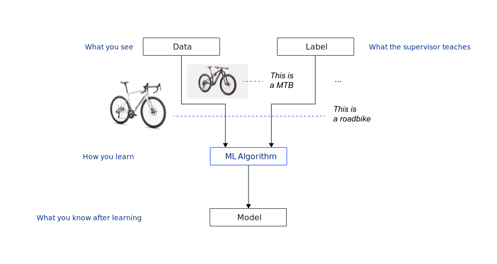
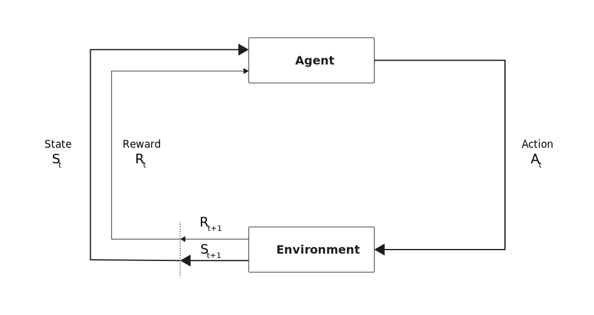
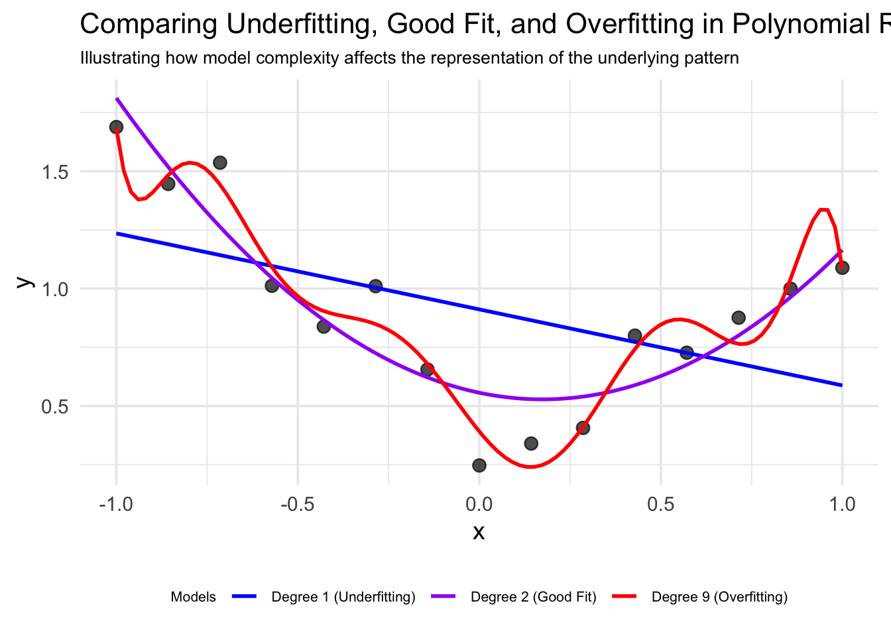

flowchart TD
AI[Artificial Intelligence] --> ML[Machine Learning]
AI --> SP[Search and Planning]
AI --> KI[Knowledge and Inference]
AI --> MU[Modeling of Uncertainty]
ML --> SL[Supervised Learning]
ML --> UL[Unsupervised Learning]
ML --> RL[Reinforcement Learning]
style AI fill:#000,stroke:#000,stroke-width:1px,color:#fff
style ML fill:#0333ff,stroke:#0333ff,stroke-width:1px,color:#fff
Introduction
Characteristics
Learning agents are those that can improve their behavior through diligent study of past experiences and predictions of the future. Russel & Norvig (2022, p. 668)
At its core, a learning agent (LA):
- Uses machine learning (ML) when it’s a computer system
- Improves performance based on experience (observations)
- Is necessary when designers lack complete knowledge of environments
- Solves problems that are difficult to program explicitly (e.g., face recognition)
This definition from Russel & Norvig (2022) emphasizes the key aspect of learning: improvement through experience.
Definition
A computer is said to learn from experience E with respect to some task T and some performance measure P, if its performance on T, as measured by P, improves with experience E. Mitchel (1997, p. 2)
Any ML project needs to clearly specify:
- The task T (what problem are we solving?)
- The experience E (what data will the system learn from?)
- The performance measure P (how will we evaluate success?)
The performance measure component is arguably the most critical component to define correctly. Poorly defined performance measures lead to misaligned systems that optimize for the wrong objectives, creating several serious problems:
- Goal misalignment: The system optimizes for metrics that don’t actually capture what humans value or need
- Unexpected behaviors: The system may find unexpected or undesirable ways to maximize the specified metric
- Goodhart’s Law: Once a measure becomes the explicit target for optimization, it often loses its value as an accurate representation of what we actually care about1.
- Neglect of unmeasured factors: Important considerations that aren’t explicitly measured may be ignored or sacrificed
Thus, the careful definition of performance measures is essential for ensuring ML systems solve the intended problems and align with human values.
The experience component is what fundamentally distinguishes machine learning from traditional programming. In traditional programming, humans encode rules that the computer follows, while in machine learning, the computer discovers rules from data.
Traditional programming
- Rules are explicitly coded by humans
- System behavior is predetermined by these rules
- Changes require manual reprogramming
- No ability to improve from data
Machine Learning
- Rules are derived from data (the “experience”)
- System behavior emerges from patterns in the data
- Changes can occur automatically with new data
- Continuous improvement through additional experience
This shift represents a profound change in how problem-solving with computers is approached. Rather than trying to encode all possible rules and scenarios, ML allows to let systems discover patterns themselves through exposure to relevant experiences.
Why learning works
How can we be sure that our learned hypothesis will predict well for previously unseen inputs? I.e., how do we know that the hypothesis \(h\) is close to the target function \(f\) when \(f\) is unknown?
The underlying principle of computational learning theory is, that any hypothesis that is seriously wrong will almost certainly be “found out” with high probability after a small number of examples.
Thus, any hypothesis that is consistent with a sufficiently large set of training examples is unlikely to be seriously wrong: that is, it must be probably approximately correct (PAC).
ML x AI
ML constitutes one of the 4 categories of AI and is currently dominant in AI applications.
However, the other branches have important historical significance and complementary roles:
- Machine learning excels at pattern recognition, handling messy real-world data, adapting to new situations
- Search and planning is concerned with finding optimal solutions, guaranteeing results, and handling combinatorial problems. It encompasses algorithms like A*, minimax, and planning systems.
- Knowledge and inference excels at explicit reasoning, incorporating human expertise, and transparency. It includes expert systems, knowledge graphs, and logical reasoning.
- Modeling of uncertainty is concerned with handling incomplete information, quantifying confidence, and risk assessment. It covers Bayesian networks, fuzzy logic, and probabilistic reasoning
Consequently, the most powerful AI systems often combine techniques from multiple branches. For example:
- Autonomous vehicles use ML for perception, planning algorithms for navigation, and uncertainty modeling for safety decisions
- Medical diagnosis systems might combine knowledge graphs of medical facts with ML-based pattern recognition from patient data
- Game AI like AlphaGo combines reinforcement learning with tree search algorithms
LA architecture
Visualization

Building blocks
Performance element: Processes percepts and chooses actions (relates to the basics of AI we have studied so far).
Learning element: Carries out improvements — requires awareness and feedback on how the agent is doing in the environment.
Critic: Evaluation of the agent’s behavior based on a given external behavioral measure (i.e., feedback).
Problem generator: Suggests explorative actions that lead the agent to new experiences.
NotePerformance element
The performance elements of the agent designs described in chapter Intelligent agents are composed of
- a direct mapping from conditions to the current state of actions;
- a means to infer relevant properties of the world from the percept sequence;
- information about the way the world evolves and about the results of possible actions the agent can take;
- utility information indicating the desirability of actions; and/or
- goals that describe the most desirable states;
The learning element
The design of the learning element is influenced by four important aspects:
- Which component of the performance element is to be improved?
- What representation should be chosen (i.e., model type)?
- What prior information is available (i.e., prior knowledge that influences the model)?
- What form of feedback is available?
Types of feedback
The type of feedback available for learning is usually the most important factor in determining the nature of the learning problem.
- Supervised learning: Involves learning a function from examples of its inputs and outputs ➞ correct answer for each training instance
- Requires labeled data
- Examples: classification, regression
- Unsupervised learning: The agent has to learn patterns in the input when no specific output values are given ➞ reward sequence, no correct answers
- No labels needed
- Examples: Clustering, dimensionality reduction
- Reinforcement learning: The most general form of learning in which the agent is not told what to do by a teacher. Rather, it must learn from reinforcements (punishments or rewards). It typically involves learning how the environment works ➞ “just make sense of the data”
- No direct labels, but feedback on actions
- Examples: Game playing, robotic control
These categories aren’t rigid - many modern systems combine elements of multiple approaches, often refered to as semi-supervised and self-supervised learning.
- Semi-supervised learning: using small amounts of labeled data with large amounts of unlabeled data
- Self-supervised learning: creating “synthetic” supervision signals from unlabeled data
Supervised learning
Visualization

The model is then used as follows:

Supervised learning resonates with our natural understanding of teaching. Just as we teach children by showing examples and providing feedback, supervised learning algorithms learn from labeled data. This approach mirrors human education — we demonstrate correct answers and expect learners to generalize from specific examples to broader concepts. The clear relationship between inputs and desired outputs makes supervised learning conceptually straightforward. However, unlike humans who can often understand concepts from just a few examples, machine learning models typically require hundreds or thousands of labeled instances to perform well, and they lack the contextual understanding that humans bring to learning tasks.
Key challenges
- Getting enough labeled data
- Ensuring labels are accurate
- Dealing with imbalanced data classes
- Feature selection and engineering
“Garbage in, garbage out” is especially relevant in supervised learning. Your training data quality directly determines the ceiling of your model’s performance — no algorithm can overcome fundamentally flawed data. This creates several critical considerations: data must be representative of real-world applications; inconsistent labels introduce confusion into the learning process; and edge cases must be adequately represented. The process of collecting, cleaning, and verifying training data often consumes the majority of time in practical ML projects. When evaluating supervised learning results, always consider whether performance limitations stem from the algorithm or from the underlying data quality.
Approaches
Classification and regression represent fundamental approaches in supervised learning. Classification tasks predict discrete categories or labels — is this email spam? Does this image show a tumor? Which species of flower is in this photograph? These problems have definite, separate outcomes with no middle ground. Common examples include sentiment analysis, fraud detection, and image recognition. Regression predicts continuous numerical values on a spectrum, such as house prices based on features like square footage, patient’s blood glucose levels from symptom data, or tomorrow’s temperature. This distinction influences everything from model selection to evaluation metrics - accuracy makes sense for classification but not for regression, where measures like mean squared error are more appropriate. Many real-world problems can be framed as either classification or regression depending on specific needs.
Classification algorithms
- Logistic Regression: Despite its name, this is used for classification problems. It predicts the probability of an instance belonging to a particular class.
- Support Vector Machines (SVM): Creates a hyperplane that maximally separates different classes in feature space.
- Decision Trees: Splits data based on feature values to create a tree-like model of decisions.
- Random Forests: Ensemble of decision trees that improves accuracy and reduces overfitting.
- Neural Networks: Multiple layers of interconnected nodes that can learn complex patterns for classification tasks.
Regression algorithms
- Linear Regression: Models the relationship between variables by fitting a linear equation to observed data.
- Support Vector Regression (SVR): Adaptation of SVM principles for predicting continuous values.
- Decision Trees: Can be adapted for regression by predicting numerical values at leaf nodes.
- Random Forests: Ensemble method that averages predictions from multiple regression trees.
- Neural Networks: Can output continuous values for regression problems when configured with appropriate activation functions.
Versatile approaches
Many of these algorithms can be adapted for either classification or regression tasks:
- Decision Trees and Random Forests: Change output from class labels to continuous values
- Neural Networks: Modify the output layer and loss function based on the problem type
- Support Vector Machines: Use standard SVM for classification or SVR for regression
Practical applications
Image classification — inputs can be camera images, each one accompanied by an output saying, e.g., “bus” or “pedestrian”. An output like this is called a label. The agents learns a function that, when given a new image, predicts the appropriate label.
- Sentiment analysis
- Spam detection
- Loan approval prediction
Unsupervised learning
Visualization

The model is then used as follows:

Unsupervised learning mirrors how we naturally discover patterns in the world around us. Just as children learn to categorize objects without being explicitly taught every category, unsupervised algorithms find structure in unlabeled data. This approach reflects human intuition — we recognize similarities, identify outliers, and group related items without requiring prior labels. The absence of predetermined outputs makes unsupervised learning both powerful and challenging. Unlike supervised learning, these algorithms must determine what’s important within the data itself, similar to how humans can walk into an unfamiliar environment and instinctively organize what they perceive. Unsupervised methods excel at revealing hidden structures that might never be discovered through directed approaches, though their results can sometimes be more difficult to validate objectively.
Key challenges
- Evaluating the quality of results without ground truth
- Determining the optimal number of groups or patterns
- Interpreting the discovered patterns meaningfully
- Dealing with high-dimensional data
The open-ended nature of unsupervised learning creates unique considerations. Without labeled examples to guide the process, these algorithms must rely on inherent data properties like density, distance metrics, or statistical distributions. This raises fundamental questions: How do we know if discovered patterns are meaningful rather than arbitrary? What makes one clustering better than another? The absence of clear right or wrong answers means evaluation often relies on domain expertise and business context. Additionally, many unsupervised techniques struggle with the “curse of dimensionality”2 — a phenomenon where data becomes increasingly sparse as dimensions increase. In high-dimensional spaces, points become nearly equidistant from each other, making similarity measures less meaningful. For example, in a 1,000-dimensional space, the difference between the closest and farthest points becomes negligible, undermining the foundation of distance-based clustering. This dramatically impacts algorithms that rely on distance metrics, as the concept of proximity becomes less informative. Even with large datasets, the available data points become insufficient to adequately represent the vastly increased volume of the feature space.
Approaches
Clustering and dimensionality reduction represent core approaches in unsupervised learning. Clustering identifies natural groupings within data — which customers behave similarly? What patterns exist in gene expression data? How do documents organize into topics? These techniques reveal structure without predefined categories. Dimensionality reduction transforms complex, high-dimensional data into simpler representations while preserving essential information. This helps visualize complex datasets, remove noise, and combat the curse of dimensionality. Both approaches serve as powerful tools for exploratory data analysis, helping analysts gain insights before applying more targeted methods. The insights generated often inform subsequent supervised learning problems by suggesting natural categories or revealing which features capture the most variance.
Clustering algorithms
- K-Means: Partitions data into K clusters by minimizing the distance between points and their assigned cluster centers.
- Hierarchical Clustering: Builds nested clusters by either merging or splitting them successively (agglomerative or divisive).
- DBSCAN: Density-based approach that finds clusters of arbitrary shape and identifies outliers.
- Gaussian Mixture Models (GMM): Models clusters as a mixture of multiple Gaussian distributions.
- Spectral Clustering: Leverages eigenvalues of similarity matrices to reduce dimensions before clustering.
Dimensionality reduction algorithms
- Principal Component Analysis (PCA): Transforms data to a new coordinate system that maximizes variance along orthogonal axes.
- t-SNE: Visualizes high-dimensional data by giving each datapoint a location in a 2D or 3D map, particularly effective for visualization.
- UMAP: Manifold learning technique for dimension reduction that preserves more global structure than t-SNE.
- Autoencoders: Neural networks that compress data into a latent-space representation and then reconstruct it.
- Kernel PCA: Non-linear extension of PCA that works in transformed feature spaces.
Practical applications
Computer vision — when shown millions of images, a computer vision system could identify large cluster of similar images (without “knowing” what is shown on these).
- Customer segmentation
- Anomaly detection
- Topic modeling in text
- Recommender systems
- Image compression
TipExample
We begin with the unlabeled data, representing customer purchases of different products. A value of 1 indicates a purchase, while 0 indicates no purchase.
Unlabeled data
| Customer | Product 1 | Product 2 | Product 3 | Product 4 | Product 5 | Product 6 |
|---|---|---|---|---|---|---|
| Customer 1 | 0 | 1 | 1 | 0 | 0 | 0 |
| Customer 2 | 1 | 0 | 0 | 0 | 0 | 1 |
| Customer 3 | 1 | 0 | 0 | 0 | 1 | 1 |
| Customer 4 | 0 | 0 | 1 | 1 | 0 | 0 |
| Customer 5 | 0 | 0 | 0 | 1 | 1 | 1 |
| Customer 6 | 1 | 1 | 1 | 0 | 0 | 0 |
| Customer 7 | 0 | 1 | 1 | 1 | 0 | 0 |
| Customer 8 | 1 | 1 | 0 | 0 | 0 | 0 |
First, we apply clustering to group customers with similar product purchasing behavior. Customers with similar rows (purchase patterns) are grouped together.
Customers 1, 6, 7, and 8 tend to buy products 1–3, often in combination.
| Customer | Product 1 | Product 2 | Product 3 | Product 4 | Product 5 | Product 6 |
|---|---|---|---|---|---|---|
| Customer 1 | 0 | 1 | 1 | 0 | 0 | 0 |
| Customer 6 | 1 | 1 | 1 | 0 | 0 | 0 |
| Customer 7 | 0 | 1 | 1 | 1 | 0 | 0 |
| Customer 8 | 1 | 1 | 0 | 0 | 0 | 0 |
Customers 2, 3, and 5 show a preference for product 6 and product 5.
| Customer | Product 1 | Product 2 | Product 3 | Product 4 | Product 5 | Product 6 |
|---|---|---|---|---|---|---|
| Customer 2 | 1 | 0 | 0 | 0 | 0 | 1 |
| Customer 3 | 1 | 0 | 0 | 0 | 1 | 1 |
| Customer 5 | 0 | 0 | 1 | 1 | 1 | 1 |
Customer 4 has a unique pattern and does not fit well into either cluster.
Second, we perform association rule mining to find relationships between product purchases, i.e., which products are frequently bought together.
| Metric. | Meaning |
|---|---|
| Support | % of transactions that contain both items (how common is the combo?) |
| Confidence | % of times Product B is bought when Product A is bought (A → B) |
| Lift | How much more likely A and B are bought together vs. by chance3 |
| Rule | Support Count (X & Y) | X Count | Confidence | Support(Y) | Lift |
|---|---|---|---|---|---|
| P1 → P2 | 2 | 4 | 50.0% | 50.0% | 1.00 |
| P1 → P3 | 1 | 4 | 25.0% | 50.0% | 0.50 |
| P1 → P4 | 0 | 4 | 0.0% | 37.5% | 0.00 |
| P1 → P5 | 1 | 4 | 25.0% | 25.0% | 1.00 |
| P1 → P6 | 2 | 4 | 50.0% | 37.5% | 1.33 |
| P2 → P1 | 2 | 4 | 50.0% | 50.0% | 1.00 |
| P2 → P3 | 3 | 4 | 75.0% | 50.0% | 1.50 |
| P2 → P4 | 1 | 4 | 25.0% | 37.5% | 0.67 |
| P2 → P5 | 0 | 4 | 0.0% | 25.0% | 0.00 |
| P2 → P6 | 0 | 4 | 0.0% | 37.5% | 0.00 |
| P3 → P1 | 1 | 4 | 25.0% | 50.0% | 0.50 |
| P3 → P2 | 3 | 4 | 75.0% | 50.0% | 1.50 |
| P3 → P4 | 2 | 4 | 50.0% | 37.5% | 1.33 |
| P3 → P5 | 0 | 4 | 0.0% | 25.0% | 0.00 |
| P3 → P6 | 0 | 4 | 0.0% | 37.5% | 0.00 |
| P4 → P1 | 0 | 3 | 0.0% | 50.0% | 0.00 |
| P4 → P2 | 1 | 3 | 33.3% | 50.0% | 0.67 |
| P4 → P3 | 2 | 3 | 66.7% | 50.0% | 1.33 |
| P4 → P5 | 1 | 3 | 33.3% | 25.0% | 1.33 |
| P4 → P6 | 1 | 3 | 33.3% | 37.5% | 0.89 |
| P5 → P1 | 1 | 2 | 50.0% | 50.0% | 1.00 |
| P5 → P2 | 0 | 2 | 0.0% | 50.0% | 0.00 |
| P5 → P3 | 0 | 2 | 0.0% | 50.0% | 0.00 |
| P5 → P4 | 1 | 2 | 50.0% | 37.5% | 1.33 |
| P5 → P6 | 2 | 2 | 100.0% | 37.5% | 2.67 |
| P6 → P1 | 2 | 3 | 66.7% | 50.0% | 1.33 |
| P6 → P2 | 0 | 3 | 0.0% | 50.0% | 0.00 |
| P6 → P3 | 0 | 3 | 0.0% | 50.0% | 0.00 |
| P6 → P4 | 1 | 3 | 33.3% | 37.5% | 0.89 |
| P6 → P5 | 2 | 3 | 66.7% | 25.0% | 2.67 |
Insights
Based on the association rules analysis, we can derive the following insights:
- Strong product pairings:
- Products 5 and 6 have the strongest association with the highest lift value (2.67) in both directions. Customers who buy either one are much more likely to buy the other, suggesting these products strongly complement each other.
- Products 2 and 3 also show a strong positive association (lift = 1.50), with 75% of product 2 buyers also purchasing product 3.
- One-way associations:
- The rule P4 → P3 shows that 66.7% of customers who buy product 4 also buy product 3 (lift = 1.33), but the reverse isn’t as strong (P3 → P4 has only 50% confidence).
- This suggests Product 4 buyers are a subset of product 3 buyers, but not vice versa.
- Product clustering:
- Group 1: Products 5 and 6 (strongest association)
- Group 2: Products 2 and 3 (strong association)
- Group 3: Products 1 and 6 (moderate association)
- Product Independence and Negative Associations:
- Several products never appear together (lift = 0), such as P1 and P4, P2 and P5, P3 and P5.
- This suggests potential product incompatibility or different customer segments.
- Product Popularity:
- Products 1, 2, and 3 have the highest support (each purchased by 50% of customers)
- Product 5 has the lowest support (only 25%)
- Business Applications:
- Bundle marketing: The P5 → P6 rule with 100% confidence and 2.67 lift suggests these products could be effectively bundled.
- Recommendation systems: When a customer buys product 4, recommending product 3 would be logical (66.7% confidence).
Reinforcement learning
Visualization

The goal of reinforcement learning is to learn an optimal policy. A policy defines for each state \(S\) of the environment an action \(A\), which shall be executed in this state. The optimal policy is the policy for which the expected cumulative future reward is maximal.
Reinforcement-Learning is Trial-and-Error learning. The agent selects an action \(A_t\) in it’s current state \(S_t\). After the execution of this action the environment state changes, the new state is \(S_{t+1}\). Moreover, the agent may receive a positive or negative reward \(R_{t+1}\) for his previous action. These received rewards are applied to adapt the future action-selection. Since the reward is only available after performing actions, this type of learning is also called learning with a critic - in contrast to learning with a teacher (i.e. supervised learning).
Reinforcement-Learning works in non-deterministic environments (i.e. for a given state-action pair the successive state is not known for sure). Reinforcement-Learning can also be applied, if the environment is totally unknown to the agent (i.e. the agent doesn’t know the set of possible successive states and the set of possible rewards).
During the iterative training process in unknown environments the agent must explore. The challenge is to find a good explore-exploit trade off. Explore means going along new, not yet visited paths. Exploit means applying for the best action learned so far.
Reinforcement learning embodies how we learn through interaction with our environment. Just as children learn by exploring their surroundings and receiving feedback, reinforcement learning agents improve behavior through trial and error. This approach reflects natural learning processes — we take actions, observe consequences, and adjust future decisions accordingly. The dynamic interplay between exploration (trying new things) and exploitation (leveraging known rewards) mirrors how humans navigate unfamiliar situations. Unlike supervised or unsupervised learning, reinforcement learning incorporates the concept of time — actions influence not just immediate rewards but also future states and opportunities. This sequential decision-making aspect makes it particularly suitable for complex tasks where long-term strategy matters more than immediate outcomes. While powerful, this approach requires careful formulation of reward mechanisms that truly reflect desired behaviors rather than exploitable shortcuts.
Key challenges
- Designing appropriate reward functions
- Balancing exploration vs. exploitation
- Dealing with delayed rewards and credit assignment
- Sample efficiency in real-world applications
- Transferring learning across different environments
The reward-driven nature of reinforcement learning presents unique complexities. Since the agent learns entirely from environmental feedback, the design of reward signals fundamentally shapes what is learned. An improperly specified reward function can lead to unexpected or undesired behaviors — a phenomenon known as “reward hacking4.” Additionally, reinforcement learning algorithms must decide when to explore new possibilities versus when to exploit known effective strategies. Too much exploration wastes resources; too little risks getting stuck in suboptimal solutions. Perhaps most challenging is the temporal credit assignment problem: when a positive outcome follows a long sequence of actions, how do we determine which actions were responsible? This difficulty increases with longer time horizons and more complex action spaces.
Approaches
Value-based methods and policy-based methods represent fundamental approaches in reinforcement learning. Value-based approaches focus on estimating the expected utility of states or state-action pairs — essentially asking “how good is it to be in this situation?” These methods indirectly derive behaviors by selecting actions that lead to states with higher estimated values. Policy-based methods directly model the agent’s behavior strategy, learning a mapping from states to actions without necessarily estimating intermediate values. The choice between these approaches influences everything from sample efficiency to exploration strategy. Many modern algorithms combine elements of both approaches, learning both value functions and explicit policies simultaneously to leverage their complementary strengths. The distinctions become especially important when tackling problems with continuous action spaces or when the optimal policy is stochastic rather than deterministic.
Value-based algorithm example
Q-Learning learns the value of state-action pairs (Q-values) through iterative updates based on experienced rewards. In a real-world application, smart thermostats use Q-learning to optimize temperature settings based on occupancy patterns. The thermostat learns the value of adjusting temperature (actions) at different times and conditions (states) by observing energy consumption and user comfort feedback (rewards). Over time, it discovers which temperature adjustments maximize comfort while minimizing energy use, adapting to the specific household’s patterns without requiring explicit programming.
Policy-based algorithm example
Proximal Policy Optimization (PPO) constrains policy updates to prevent destructively large changes while maintaining sample efficiency. Boston Dynamics’ robotic dogs employ PPO to learn stable walking gaits across diverse terrains. The robot directly learns a policy mapping sensor readings (states) to joint movements (actions). PPO ensures that learning progresses steadily without catastrophic forgetting or instability - critical when a physical robot is learning through actual interactions with its environment. The algorithm makes conservative updates to movement policies, improving performance while preventing the robot from “unlearning” previously mastered skills.
Practical applications
Game playing — imagine, it is told at the end of a game that it has won (a reward) or lost (a punishment). Based on that feedback, it has to decide which of the actions prior to the reinforcement were most responsible for it, and to alter its actions to aim towards more rewards in future.
- Game playing (Chess, Go, video games)
- Robotics and control systems
- Resource management and scheduling
- Recommendation systems
The learning process
Phases
flowchart LR
TD[(Training Data)] --> T[Training]
T --> M[Model]
VD[(Validation Data)] --> V[Validation]
M --> V
V --> |"Hyperparameter Tuning"| T
V --> |"Model Selection"| SM[Selected Model]
TestD[(Test Data)] --> TE[Testing]
SM --> TE
TE --> |"Performance Estimation"| FM[Final Model]
ND[(New Data)] --> AP[Application]
FM --> AP
AP --> PR[Predictions]
style TD fill:#f9f9f9,stroke:#333,stroke-width:1px
style VD fill:#f9f9f9,stroke:#333,stroke-width:1px
style TestD fill:#f9f9f9,stroke:#333,stroke-width:1px
style ND fill:#f9f9f9,stroke:#333,stroke-width:1px
style M fill:#c0f0c0,stroke:#333,stroke-width:1px
style SM fill:#c0f0c0,stroke:#333,stroke-width:1px
style FM fill:#c0f0c0,stroke:#333,stroke-width:1px
style PR fill:#ffe0c0,stroke:#333,stroke-width:1px
Machine learning projects follow a systematic workflow with distinct phases, each serving a critical purpose in developing reliable and effective models. Understanding these phases helps ensure robust model development and deployment.
Training phase
During the training phase, we apply a carefully selected dataset to learn a general model. The nature of this model varies by learning paradigm — in unsupervised learning, it describes the inherent structure of the data (such as clusters or reduced dimensions), while in supervised and reinforcement learning, it captures functional relationships that map inputs to outputs or states to actions. This phase involves iterative optimization of model parameters to minimize error or maximize reward according to a specific objective function. The choice of training algorithm significantly impacts both computational efficiency and the quality of the resulting model. While the model aims to fit training data well, excessive focus on perfect training performance often leads to overfitting — a critical pitfall where the model essentially memorizes training examples rather than learning generalizable patterns.
Validation phase
The validation phase addresses a fundamental challenge in machine learning: we don’t simply want models that excel on training data; we need models that generalize well to new, unseen data. To assess generalization capacity, we apply the model to a validation dataset that remains completely separate from training data. For each input in the validation set, we calculate the model’s prediction and compare it against the true output (for supervised learning) or evaluate its performance under defined metrics (for unsupervised and reinforcement learning). This creates an error statistic or performance measure that serves multiple crucial purposes: evaluating individual models, comparing different approaches, tuning hyperparameters, and ultimately selecting the most promising candidate. The validation phase essentially simulates real-world performance in a controlled environment, helping identify issues like overfitting or underfitting before deployment.
Test phase
The test phase provides the final performance assessment before real-world deployment. After model selection and tuning in the validation phase, we evaluate the chosen model on a completely separate test dataset — one that hasn’t influenced any aspect of model development. This rigorous separation ensures an unbiased estimate of operational performance. The test dataset should closely mirror the distribution of data the model will encounter in production, making test results a reliable predictor of real-world effectiveness. Lower performance on test data compared to validation data often signals potential distribution shifts or overfitting to the validation set itself — critical issues to address before deployment. The test phase represents our last opportunity to detect problems in a controlled environment, making it an essential safeguard against deploying underperforming models.
Operational mode
Once a model demonstrates satisfactory performance in the test phase, it transitions to operational mode — deployment in real-world environments to fulfill its intended purpose. In this phase, the model processes new inputs to generate outputs (classifications, predictions, actions) that drive decision-making or insights. Operational deployment introduces new considerations beyond accuracy: computational efficiency, latency requirements, integration with existing systems, and monitoring mechanisms all become crucial factors. Even after deployment, the learning process doesn’t end; production models require ongoing monitoring for performance degradation, which often occurs as real-world data distributions gradually shift away from training distributions. Many sophisticated deployments incorporate feedback loops that capture new operational data, enabling periodic retraining to maintain or improve performance over time. This continuous improvement cycle helps ensure models remain effective as the environments they operate in evolve.
Model complexity
The Bias-variance tradeoff
In ML, selecting the appropriate model complexity is a fundamental challenge. Here this principle is demonstrated through polynomial curve fitting – one of the simplest yet most illustrative examples of the bias-variance tradeoff.
When building a machine learning model, we must balance two competing concerns:
- Bias: The error from erroneous assumptions in the learning algorithm. High bias can cause an algorithm to miss relevant relations between features and outputs (underfitting).
- Variance: The error from sensitivity to small fluctuations in the training set. High variance models can fit the training data very well but perform poorly on new, unseen data (overfitting).
Polynomial curve fitting example
In this visualization, we’ll see how polynomials of different degrees fit a dataset generated from a true quadratic function with some added noise:
Attaching package: 'dplyr'The following objects are masked from 'package:stats':
filter, lagThe following objects are masked from 'package:base':
intersect, setdiff, setequal, union

Underfitting
The linear model (blue line) is too simple to capture the underlying pattern. It has:
- High bias:
The model makes strong assumptions about the data structure (linearity) - Low variance:
Different training sets would produce similar models - High training and test error:
The model fails to capture the fundamental pattern
Good fit
The quadratic model (purple line) captures the underlying pattern well. It has:
- Balanced bias and variance:
The model makes appropriate assumptions - Low training and test error:
Performs well on both seen and unseen data - Good generalization:
Likely to predict new data points accurately
Overfitting
The high-degree polynomial (red line) fits training data closely but wiggles excessively. It has:
- Low bias:
Makes few assumptions about the data structure - High variance:
Would change dramatically with different training sets - Low training error but high test error:
Memorizes the training data rather than learning the pattern
The learning principle
This example illustrates Ockham’s razor in action.
The simplest model that adequately explains the data is likely to have the best predictive power. While we could create a complex polynomial that passes through every training point perfectly, such a model would likely perform poorly on new data.
NoteOckham’s razor
Ockham’s razor is a choice between more complex, low-bias hypotheses that fit the training data well and simple, low-variance hypotheses that may generalize better. Wililiam of Ockham stated in the first century the principle that “plurality [of entities] should not be posited without necessity — the so-called Ockham’s razor that”shaves off” dubious explanations.
Conclusion
- Machine learning fundamentally changes how we approach problem-solving with computers
- Instead of explicit programming, we design systems that learn from data and experience
- The field combines statistics, optimization, and domain knowledge
- Understanding the core concepts helps in developing effective learning systems
- Key tradeoffs include:
- Bias vs. variance
- Model complexity vs. generalization
- Exploration vs. exploitation
- Accuracy vs. interpretability
Exercises
Learning scenarios
Consider following problems:
- Me learning to play tennis
- An infant learning to speak
Discuss following questions:
- Explain how this process fits into the general learning model.
- Describe the percepts and actions of the player.
- What types of learning I must do?
- What example data is available?
Learning types
Describe the differences between supervised, unsupervised, and reinforcement learning.
Ockham’s razor
In your own words, explain to us what Ockham’s razor is. Find an example that you can use to enrich your explanation of the concept.
ML concepts
Define the following machine-learning terms in your own words
- Inductive learning
- Training set
- Hypothesis
- Bias
- Variance
- Curve fitting
Qualification problem
Draw a decision tree for the problem of deciding whether to move forward at a road intersection, given that the light has just turned green.
What problems do you see? Argue based on the qualification problem discussed in chapter probability.
Generalize your findings and describe for which kind of problems decision trees are not suitable.
Literature
Mitchel, T. (1997). Machine learning (mcgraw-hill international edit). McGraw-Hill Education. https://books.google.de/books?id=dMp2uwEACAAJ
Russel, S., & Norvig, P. (2022). Artificial intelligence: A modern approach. Pearson Education.
Footnotes
Examples for Goodhart’s Law in ML: A recommendation system optimized solely for clicks might discover that clickbait titles and thumbnails maximize this metric, even if the content quality suffers and user satisfaction decreases long-term. If a content filter is optimized only to minimize false negatives (letting harmful content through), it might become overly restrictive and block large amounts of legitimate content.↩︎
To illustrate the curse of dimensionality: imagine a unit hypercube (with sides of length 1) in different dimensions. In 2D, it has area 1. In 3D, volume 1. In 100D, to capture just 1% of the hypercube’s volume, you’d need to extend 0.955 units along each dimension — meaning 99% of the volume is in the “corners.” This explains why data points become increasingly distant from each other and distance metrics become less useful as dimensions increase.] When implementing unsupervised methods, success depends on careful feature selection, appropriate distance metrics, and clear alignment with the underlying questions you’re trying to answer.↩︎
Lift measures how much more likely the consequent (Y) is when the antecedent (X) is present, compared to when the antecedent is absent.
\[\text{Lift}(X \rightarrow Y) = \frac{\text{Confidence}(X \rightarrow Y)}{\text{Support}(Y)}\]
Where:
\[\text{Confidence}(X \rightarrow Y) = \frac{\text{Support}(X \text{ and } Y)}{\text{Support}(X)}\] \[\text{Support}(Y) = \frac{\text{Count}(Y)}{\text{Total Transactions}}\]
Interpretation:
Lift > 1: Positive correlation (products appear together more than expected by chance)
Lift = 1: No correlation (independence)
Lift < 1: Negative correlation (products appear together less than expected by chance)↩︎Example for reward hackin:, a reinforcement learning agent tasked with playing a video game might discover an unintended bug that produces high scores without completing the actual objective. Rather than learning the intended gameplay strategy, it optimizes for exploiting this glitch.↩︎